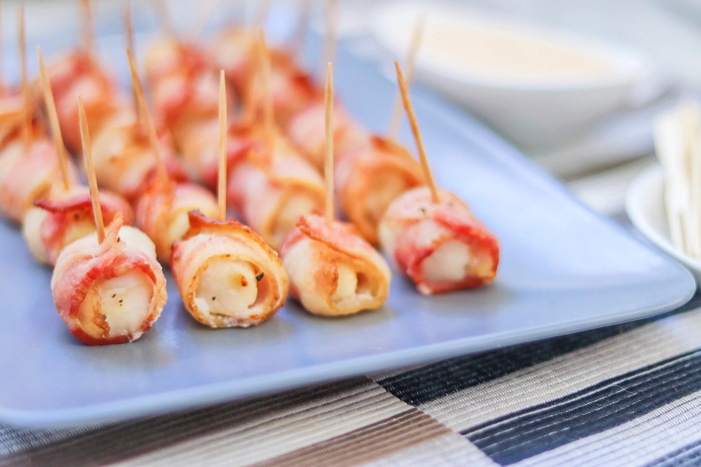

Bacon-Wrapped Scallops with Sriracha Mayo

Bacon-Wrapped scallops on a tray
This delicious appetizer is prepared quickly and easily in the air fryer and served with a spicy Sriracha mayo dipping sauce. Great for gatherings and parties. Everyone will love the delicious combination of bacon and seafood.
- 1/2 cup of mayonnaise
- 2 tablespoons of Sriracha sauce
- 1 pound of bay scallops (about 36 small scallops)
- 1 pinch of course salt
- 1 pinch of freshly cracked black pepper
- 12 slices of bacon, cut into thirds
- 1 serving of olive oil cooking spray
- Mix mayonnaise and Sriracha sauce together in a small bowl. Refrigerate Sriracha mayo until ready to serve.
- Preheat the air fryer to 390 degrees F (200 degrees C).
- Spread scallops out onto a plate or cutting board and blot dry with a paper towel. Season with salt and pepper. Wrap each scallop with 1/3 slice of bacon and secure with a toothpick.
- Spray the air fryer basket with cooking spray. Place bacon-wrapped scallops in the basket in a single layer; split into 2 batches if necessary.
- Cook in the air fryer for 7 minutes. Check for doneness; scallops should be opaque and bacon should be crispy. Cook 1 to 2 minutes longer, if necessary, checking every minute. Remove scallops carefully with tongs and place on a paper towel-lined plate to absorb excess oil from the bacon. Serve with Sriracha mayo.